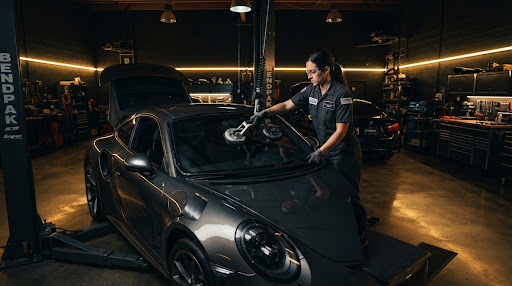
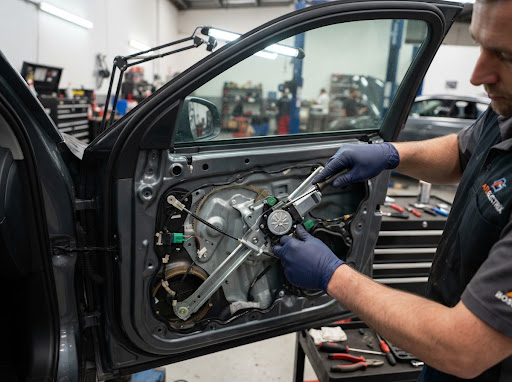
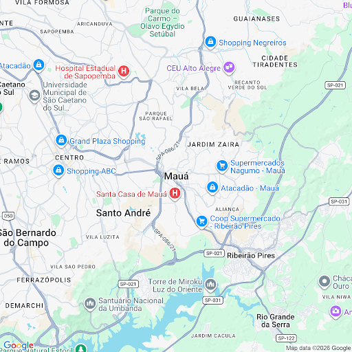

Carros de Passeio
Hatch, Sedãs e SUVs • Nacionais & Importados
Substituição e reparo de para-brisas, vidros laterais e traseiros, manutenção de máquinas elétricas e palhetas. Atendimento ágil para carros de passeio, utilitários e frotas comerciais em Mauá e região.

COBERTURA MULTIMARCAS
Hatch, Sedãs e SUVs • Nacionais & Importados
Vidros térmicos, reforçados e de caçamba
Frotas operacionais e logística com prioridade
Peças originais, vedação homologada e mão de obra rigorosa para preservar o valor e a
segurança do seu veículo.
Troca e instalação precisa de para-brisas certificados, vidros laterais e traseiros com desembaçador térmico. Reparo instantâneo de trincas tipo olho-de-boi e vedação química completa contra infiltrações de água e ruídos aerodinâmicos.

DIAGNÓSTICO IMEDIATOConserto, recuperação e substituição de máquinas de vidro manuais e elétricas. Reparo minucioso de motores, arrastes, roldanas, botões de comando na porta, fiação e travas elétricas centralizadas.
PEDIR COTAÇÃO DESTE SERVIÇOInstalação imediata de palhetas de silicone, híbridas e convencionais tipo flat-blade. Garanta visibilidade absoluta em tempestades e evite riscos permanentes no vidro novo. Testamos o esguicho e a pressão dos braços limpadores sem custo extra.
Mais de 40 modelos de encaixes especiais para veículos importados e nacionais.
Elimine barulhos incômodos de vento em alta velocidade, assobios e entrada de água no carpete. Substituição de borrachas perimetrais, guarnições de portas, pestanas externas e aplicação de calhas de chuva automotivas de acrílico reforçado.
Teste hidrostático de pressão para confirmação estanque da cabine.
POR QUE ESCOLHER NOSSA OFICINA
Transparência mecânica, ferramentas pneumáticas adequadas e compromisso inegociável com a
segurança da sua família.
Troca e liberação segura com adesivos de poliuretano de alta densidade e secagem técnica ultra rápida homologada.
Desmontagem e montagem cirúrgicas. Protegemos forros de teto, sensores elétricos, painéis e a pintura contra qualquer risco.
Vidros temperados e laminados com estrita conformidade INMETRO e normas internacionais de impacto e transparência.
Parcelamento facilitado no cartão de crédito em até 10x, Pix com desconto e orçamentos claros sem nenhuma cobrança oculta.
SIMPLES E SEM BUROCRACIA
Da primeira mensagem à saída do seu carro com vidro perfeito em 3 etapas práticas.
Mande uma mensagem no WhatsApp informando a marca, modelo, ano do carro ou a foto da avaria para identificação exata da peça.
ABRIR WHATSAPP AGORANossa equipe confirma disponibilidade em estoque e envia a cotação transparente com valores de peças, mão de obra e prazos.
RESPOSTA EM MINUTOSVenha até nossa oficina ou agende seu horário preferencial. Você aguarda em nossa sala climatizada e sai com garantia por escrito.
VEÍCULO LIBERADO NO MESMO DIA“Precisei trocar o para-brisa do meu Jeep Renegade que trincou na estrada. Na concessionária pediram 15 dias de espera. A equipe da GK tinha a peça original a pronta entrega e fizeram o serviço impecável em 2 horas! Vedação perfeita.”
“O vidro do motorista travou aberto em um dia chuvoso. Fui correndo na GK Auto Vidros e eles consertaram a máquina de vidro sem tentar empurrar peça desnecessária. Preço extremamente justo e atendimento nota 10.”
“Tenho duas vans escolares e a GK cuida de todos os vidros e travas das nossas frotas. Honestos, rápidos e com nota fiscal e garantia. Recomendo de olhos fechados para quem quer qualidade de verdade em Mauá.”
OFICINA & ATENDIMENTO PRESENCIAL
Venha tomar um café conosco ou envie sua solicitação pelo formulário abaixo para
resposta prioritária.
Segunda a Sexta: 08:00 às 18:00
Sábado: 08:00 às 12:00
Domingos e Feriados: Fechado
R. João Pessoa, 30 - Vila Bocaina,
Mauá - SP, 09310-260

Estacionamento próprio e fácil acesso com manobrista
ORÇAMENTO SEM COMPROMISSO
Preencha os dados e receba resposta com disponibilidade e valor estimado.